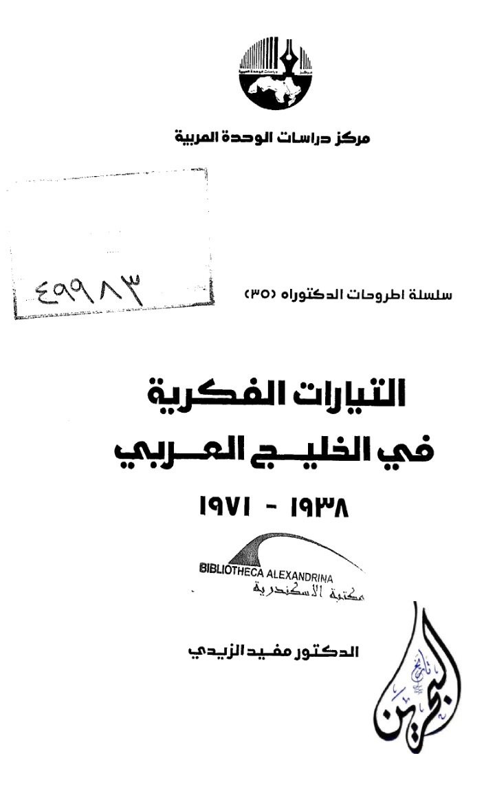

١٩٣٨ إلى ١٩٧١م، نشر ٢٠٠٠م · صفحات من كتاب د. مفيد الزيدي «التيارات الفكرية في الخليج العربي ١٩٣٨ إلى ١٩٧١م»، مركز دراسات الوحدة العربية، بيروت، الطبعة الأولى، مايو ٢٠٠٠م
مفيد الزيدي، التيارات الفكرية في الخليج العربي: جاسم القطامي في الحركة الوطنية، وجمعية لولوة
ما هي
١. في الحاشية ١٤٤ ترجمة مختصرة: ولد جاسم القطامي في الكويت عام ١٩٢٧م، وتخرج في كلية الشرطة في مصر عام ١٩٥٢م، وعين مديرا عاما للشرطة في الكويت عام ١٩٥٦م وهو أول ضابط شرطة كويتي ووصل إلى رتبة مقدم، ثم وكيلا لوزارة الخارجية عام ١٩٦٢م، وانتخب عضوا في مجلس الأمة ثم استقال منه عام ١٩٦٦م، وتفرغ للعمل في الأندية والتجمعات القومية والليبرالية. ٢. وتلا د. أحمد الخطيب في الخطابة في احتفال ثانوية الشويخ يوم ١ فبراير ١٩٥٩م. ٣. ويرد في كتلة النواب الوطنيين والتجمع الوطني وكتلة الوطنيين ١٩٦٨م، وبين النواب المستقيلين عام ١٩٦٤م والموقعين على بيان ١٩٦٧م. ٤. وفي ملحق الجمعيات النسائية الجمعية الثقافية الاجتماعية النسائية، تأسست في الكويت عام ١٩٦٣م بقيادة لولوة القطامي.
أهميتها
دراسة أكاديمية تضع جاسم في التيارات الليبرالية والقومية ولولوة على رأس جمعيتها.
صور الصفحات


ملاحظات
نعرض هنا الصفحات الأولى فقط، ويرى أفراد العائلة بعد تسجيل الدخول كل الصفحات وعددها 16.
المصادر
د. مفيد الزيدي، التيارات الفكرية في الخليج العربي ١٩٣٨ إلى ١٩٧١م، مركز دراسات الوحدة العربية، بيروت، ٢٠٠٠م، ص ١٢٧ و١٢٨ و١٣١ و١٣٢ و١٣٤ و١٣٥ و١٤٩ و١٨٢ و٢٠٢ و٣٣٥ و٣٤٢ و٣٤٥ و٣٩٨
كيف كُتب هذا النص: تختلف تواريخ الكتاب لمسيرة جاسم في الشرطة عن مصادر أخرى في الموقع.
افتح في الموقع التفاعلي